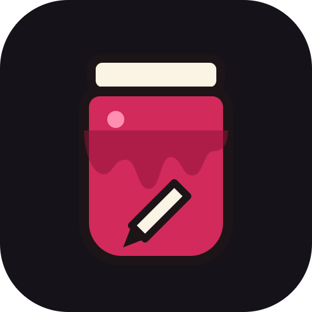

JamDraw
File
100%
0°
Style
Layers
?
Done
New
Open (.jamdraw or .svg)
Place SVG into this drawing
Save .jamdraw file
Export… (SVG, PNG, JPG, WebP, PDF)
Quick export: SVG of the page
Quick export: PNG 1024
Page size and background